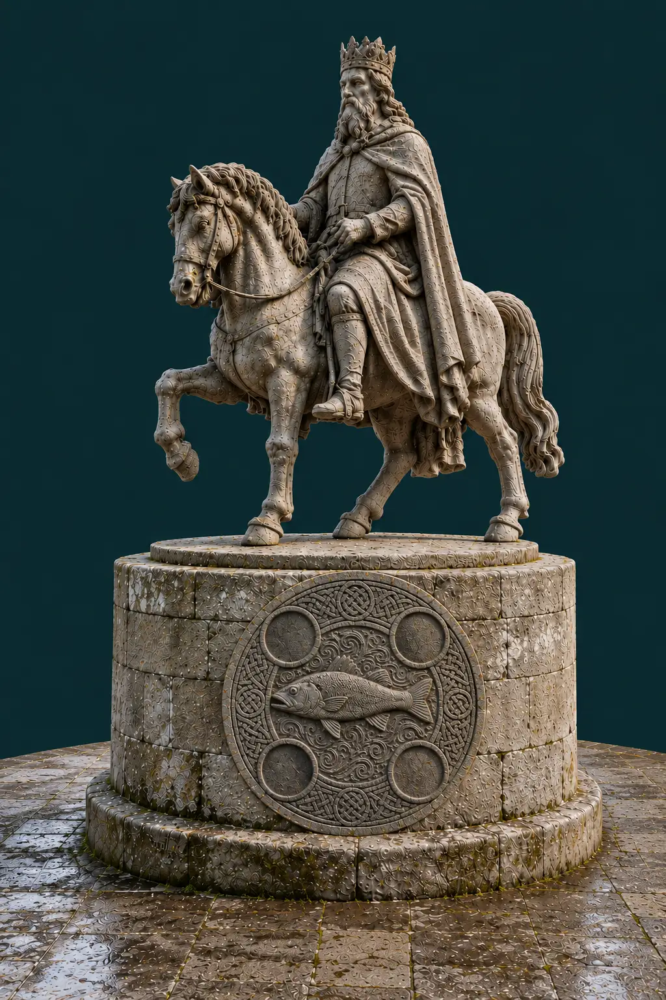
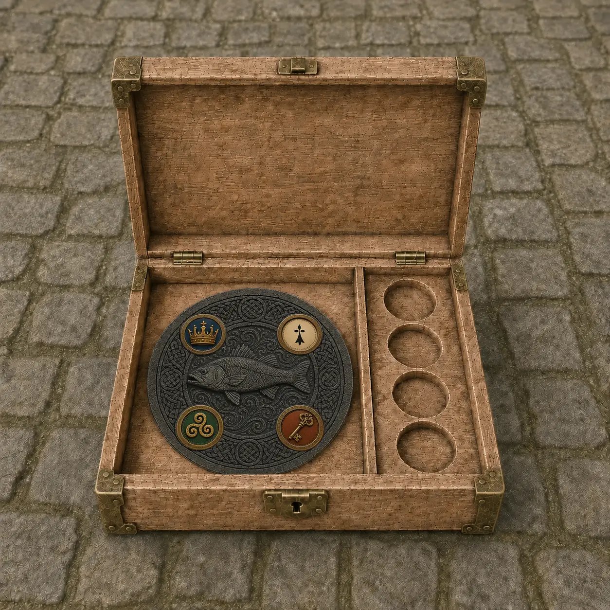
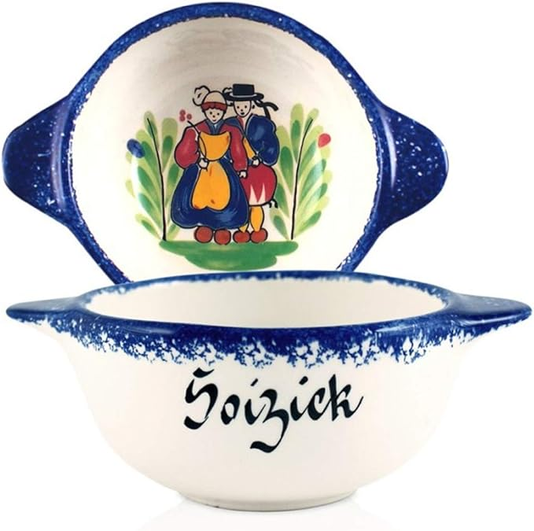
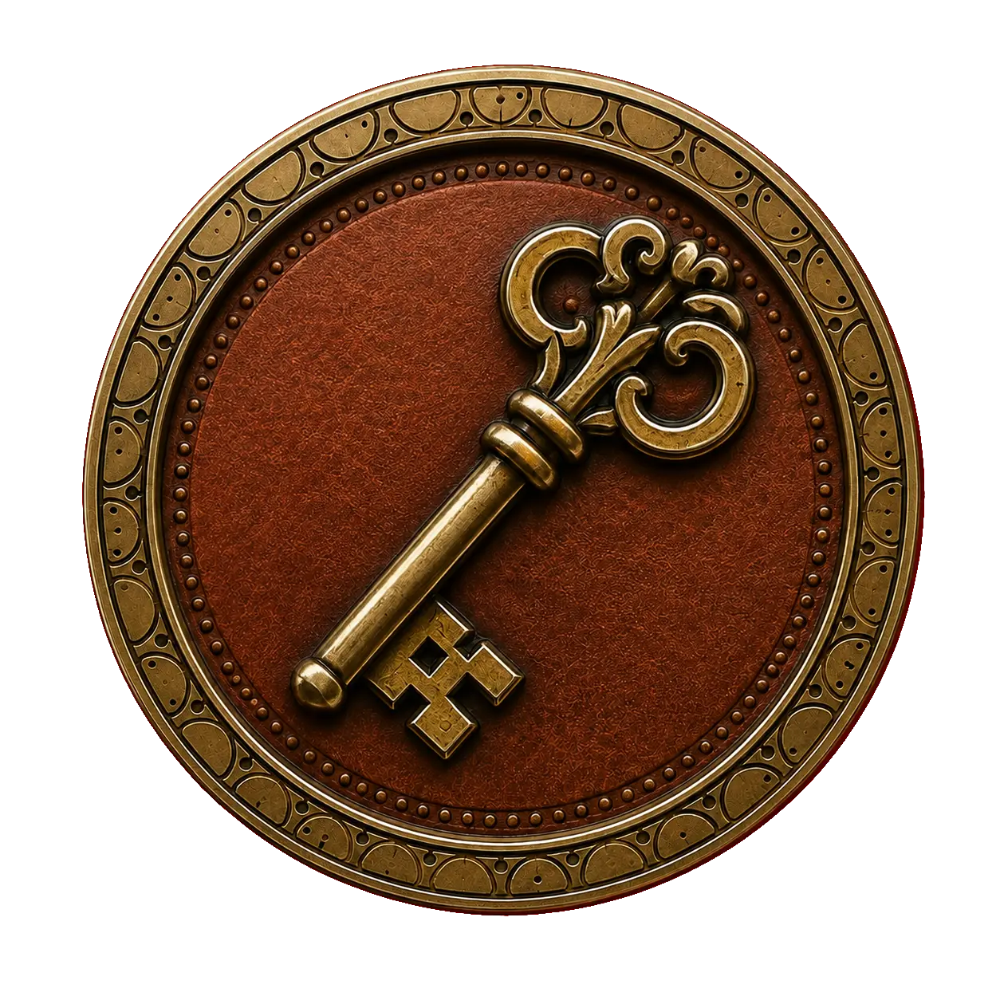
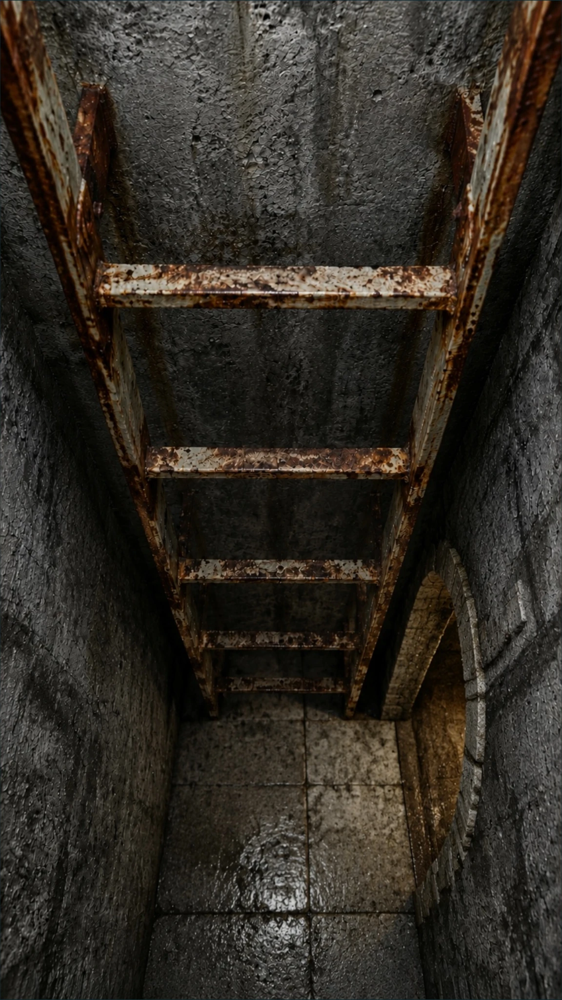
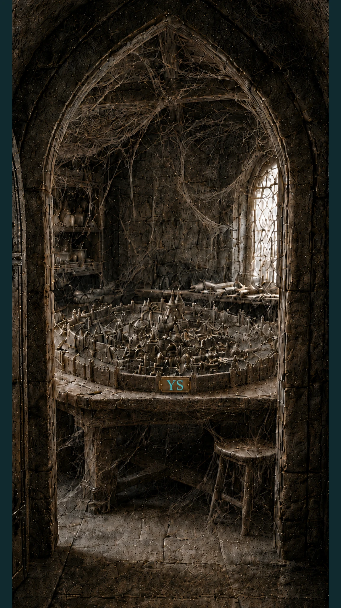

Aventure à Quimper
Le secret du Roi Gradlon
Un carnet a récemment été découvert dans les archives de Quimper. Il évoque des artefacts cachés dans la ville.
Saurez-vous les découvrir ?
Quel secret cachent-ils ?
Angle de la rue du Roi Gradlon et de la rue Kéréon
Cathédrale de Quimper
Degemer mat en enklask
« Sekred ar Roue Gradlon »
Bienvenue dans l’enquête
« Le secret du Roi Gradlon »

En quelle année a été replacée la statue du roi Gradlon ?
Toucher pour observer
Le Coffret
La boîte a été dissimulée par le contremaître dans la façade d’une demeure au moyen d’un mécanisme secret.
La bâtisse se trouve à quelques pas de la place au Beurre.
« Elle se pare d’un bleu adouci par la brume de Cornouaille. »
« La pierre, le bois, le verre et l’ardoise s’y unissent dans une parfaite harmonie. »
Avez-vous trouvé la bâtisse évoquée ?
Combien de croix de Saint-André voyez-vous sur le bâtiment ?

Le coffret est ouvert
Le coffret contient le disque, mais les artefacts sont absents...
Consultons le carnet de M. Le Gall pour les retrouver.
Toucher le carnet pour l’agrandir
La Clé
Sébastien, le tailleur de pierres a également caché l’artefact dans un mur extérieur de sa maison qui est située dans une toute petite ruelle. C’est aujourd’hui la plus vieille bâtisse civile du Finistère.
Vous pouvez acceder à cette ruelle par la rue des boucheries.
L’énigme de l'Artefact Clé
Quels sont les deux objets présents sur le panneau indiquant qu’il s’agit de la plus vieille bâtisse civile du Finistère ?
Toucher le carnet pour l’agrandir
La Couronne
L’artefact Couronne a été caché par l’un des ouvriers, qui a indiqué :
« Oubliez la Sainte et son enfant, indiquez les initiales de mes amis ouvriers. »
Dans cette rue on manupulait les couteaux au quotidien...
Toucher le carnet pour l’agrandir
Le Triskel
Le troisième artefact a été confié au tanneur installé le long de l’Odet.
Quel est le nom de la passerelle de l’Ancienne Tannerie ?
Et si vous vous promeniez sur le pont de Sainte-Catherine ?
Toucher le carnet pour l’agrandir
-L'Hermine-
Le dernier artefact a été confié au maître verrier. Sa famille était spécialisée dans la faïence.
Quel est le nom de la célèbre faïencerie de Quimper dont le magasin est dans un recoin de la place de la Cathédrale ?

Indice
Observez la devanture du magasin créant et vendant ce fameux bol.



Bravo!
Après tant d’années dispersés, les quatre artefacts sont enfin réunis…
Allons virtuellement auprès de la statue du roi Gradlon pour découvrir le secret qu’elle pourrait nous révéler.

Un passage secret se dévoile dans l’obscurité.

Le secret du roi Gradlon
Et si la cité d’Ys n’était pas qu’une légende ?
À compter de ce jour vous êtes Diwaller YS
Gardien d'YS